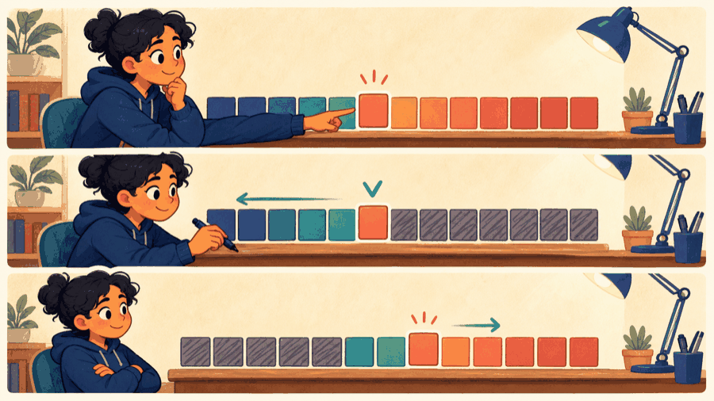

# Lecture 17: Preserve invariants to search and sort efficiently ## Preserve an invariant to obtain efficient operations
## Find ordered data or repeatedly select the most promising route candidate. **Studio thread:** Rank routes and accelerate search | Ask | Today’s answer | |---|---| | **Problem** | Find ordered data or repeatedly select the most promising route candidate. | | **Model** | An invariant rules out impossible regions or keeps the best priority at the front. | | **Represent** | Sorted array, BST, or array-backed heap supports different operations. | | **Solve** | Use binary search, heap repair, or divide–solve–merge as the operation demands. | | **Verify** | Check the ordering/heap invariant before and after every update. | | **Improve** | Compare asymptotic growth, stability, storage, and worst-case shape. | **Technique lens:** divide and conquer, ordered search, and priority-based greedy choice **Compare:** linear baseline versus binary search; bubble sort versus merge sort
## A heap encodes priority as a structural invariant. · Prioritize emergency maintenance A heap makes the highest-priority request available immediately while preserving efficient insertion. ~~~cpp #include <iostream> #include <queue> int main() { std::priority_queue<int> severity; severity.push(2); severity.push(5); severity.push(3); std::cout << "Next severity: " << severity.top(); } ~~~ **Takeaways** - A heap encodes priority as a structural invariant. - The largest stored severity is exposed first. - The application inherits logarithmic insertion.
## Binary search halves a sorted range without overflow ~~~cpp while (left <= right) { int middle = left + (right - left) / 2; if (values[middle] == target) return middle; if (values[middle] < target) left = middle + 1; else right = middle - 1; } ~~~ Each comparison discards one impossible half.
## A BST stores ordering in its left and right subtrees For every node: - keys in the left subtree are smaller; - keys in the right subtree are larger; - both subtrees obey the same invariant. Choose and document one policy for duplicate keys.
## One middle question at a time on a very long shelf <figure class="course-meme-figure"> <p></p> <figcaption> <p class="course-meme-setup"><strong>Setup</strong> The sorted shelf is long, but the target gets one middle-question at a time.</p> <p class="course-meme-punchline"><strong>Punchline</strong> One comparison deletes half the search space.</p> </figcaption> </figure>
## BST insertion preserves order by following comparisons ~~~cpp struct Node { int key; Node* left; Node* right; }; Node* insert(Node* root, int key) { if (root == nullptr) return new Node{key, nullptr, nullptr}; if (key < root->key) root->left = insert(root->left, key); else if (key > root->key) root->right = insert(root->right, key); return root; } ~~~
## A heap keeps the highest-priority element at the root A max heap is a complete binary tree where every parent is at least its children. In a zero-based array, children of index <code>i</code> are <code>2*i+1</code> and <code>2*i+2</code>.
## The tree has one rule and refuses to break it <figure class="course-meme-figure"> <figcaption> <p class="course-meme-setup"><strong>Setup</strong> The tree has one rule and refuses to break it locally.</p> <p class="course-meme-punchline"><strong>Punchline</strong> Every subtree keeps the same ordering promise, no exceptions.</p> </figcaption> </figure>
## heapify restores parent-child order after one local violation ~~~cpp void heapify(std::vector<int>& a, int size, int root) { int largest = root; int left = 2 * root + 1, right = left + 1; if (left < size && a[left] > a[largest]) largest = left; if (right < size && a[right] > a[largest]) largest = right; if (largest != root) { std::swap(a[root], a[largest]); heapify(a, size, largest); } } ~~~
## Merge sort recursively sorts halves and combines them stably 1. Divide the range into two halves. 2. Recursively sort each half. 3. Merge two sorted sequences into temporary storage. Merge sort is **stable**: records with equal keys keep their original relative order. It is O(n log n), and its array implementation uses additional storage. Heap sort is in-place but not stable.
## The queue has many tasks and one needs attention first <figure class="course-meme-figure"> <figcaption> <p class="course-meme-setup"><strong>Setup</strong> The queue has many tasks and one needs attention first.</p> <p class="course-meme-punchline"><strong>Punchline</strong> The root stays visible; everyone else waits their turn.</p> </figcaption> </figure>
## Game evolution: Invariants make grid decisions faster | L17 tool | Exact game part enabled | |---|---| | binary search | test sorted occupied cell IDs for collision | | BST | update occupied IDs as the body changes | | max heap | select the highest-priority dirt target | | stable merge sort | order equal-priority targets without changing discovery order | ~~~cpp bool occupied(const int cells[], int count, int id) { int left=0, right=count-1; while (left<=right) { int middle=left+(right-left)/2; if (cells[middle]==id) return true; if (cells[middle]<id) left=middle+1; else right=middle-1; } return false; } ~~~ **Invariant:** if <code>id</code> exists, it remains inside the current [left,right] interval. **Next unlock · L18:** package state and operations inside a reliably constructed game object.
## State the invariant before choosing a search or sort - Binary search exploits sorted-array order. - A BST encodes ordering in links. - A heap encodes priority in a complete tree. - heapify repairs a local invariant. - Merge sort applies recursive decomposition to sequences.
## Verify Prioritize emergency maintenance with a claim, trace, boundary, and improvement Use the practical example as a small experiment. Before you leave, make the reasoning visible: - **Claim:** A heap encodes priority as a structural invariant. - **Trace:** name the state that changes and the observation that would confirm it. - **Boundary:** choose one smallest, largest, empty, or invalid input that could expose a defect. - **Improvement:** explain one change that would make the solution clearer or safer. ### Exit ticket Choose one problem to solve now and two to attempt in the lab: - Implement iterative binary search and count comparisons. - Insert, search, and print an inorder traversal of a BST. - Build a min-heap without using priority_queue.
## Explain Prioritize emergency maintenance without opening the code Explain today’s idea to a partner without opening the code: 1. State the input, output, and one rule the solution must preserve. 2. Point to the operation that makes progress or changes the state. 3. Name the first test you would run after changing the implementation. If the explanation needs “and then another unrelated thing,” split the design before you code.
## Solve five problems to transfer Prioritize emergency maintenance **IC151 lab practice · 5 problems** 1. Implement iterative binary search and count comparisons. 1. Insert, search, and print an inorder traversal of a BST. 1. Build a min-heap without using priority_queue. 1. Implement merge sort and measure its comparisons. 1. Choose the best structure for a dictionary, task scheduler, and undo history. Reaching this set marks the lecture as studied in this browser. [Open the IC151 lab setup and batch schedule](ic151.html).